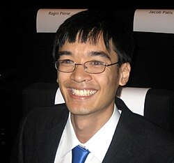
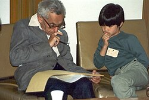
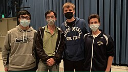
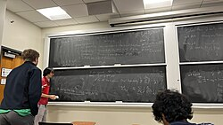

_(cropped).jpg)
| Terence Tao | |||||||||||||||||||||
|---|---|---|---|---|---|---|---|---|---|---|---|---|---|---|---|---|---|---|---|---|---|
| Traditional Chinese | 陶哲軒 | ||||||||||||||||||||
| Simplified Chinese | 陶哲轩 | ||||||||||||||||||||
| |||||||||||||||||||||
Terence Chi-Shen Tao AC FAA FRS (Chinese: 陶哲轩; pinyin: Táo Zhéxuān;[4] born 17 July 1975) is an Australian and American mathematician who was awarded the Fields Medal in 2006 for his contributions to partial differential equations, combinatorics, harmonic analysis, and additive number theory. He is a professor of mathematics at the University of California, Los Angeles (UCLA), where he holds the James and Carol Collins Chair in the College of Letters and Sciences. Among his contributions to mathematics is the Green–Tao theorem on prime numbers, which he proved in 2004 in collaboration with Ben Green.
Tao was born to Chinese immigrant parents and raised in Adelaide, South Australia. After studying at Princeton and joining the faculty at UCLA, he went on to be a researcher, known for the diversity of his own interests and his collaborations with others. Tao has won many prizes for his work, including the Fields Medal in 2006 and the Royal Medal and Breakthrough Prize in Mathematics in 2014. He is a 2006 MacArthur Fellow.[5][6][7]
Tao's published research includes topics in harmonic analysis, partial differential equations, algebraic combinatorics, arithmetic combinatorics, geometric combinatorics, probability theory, compressed sensing, and analytic number theory.[8]
Early life and career
Family
Tao's father, Billy Tao,[a] was a Chinese paediatrician who was born in Shanghai and received a medical degree (MBBS) from the University of Hong Kong in 1969.[9] Tao's mother, Grace Leong,[b] was born in Hong Kong; she received a first-class honours bachelor's degree majoring in mathematics and physics from the University of Hong Kong.[7] She was a secondary school teacher of mathematics and physics in Hong Kong.[10] Billy and Grace met as students at the University of Hong Kong.[11] They then emigrated from Hong Kong to Australia in 1972.[7][12]
Tao also has two brothers, Trevor and Nigel, who are currently living in Australia. Both formerly represented Australia at the International Mathematical Olympiad.[13][14]
Childhood
A child prodigy,[15] Terence Tao skipped five grades.[16][17] Tao exhibited extraordinary mathematical abilities from an early age, attending university-level mathematics courses at the age of 9. He is one of only three children in the history of the Johns Hopkins Study of Exceptional Talent program to have achieved a score of 700 or greater on the SAT math section while just eight years old; Tao scored a 760.[18] Julian Stanley, Director of the Study of Mathematically Precocious Youth, stated that Tao had the greatest mathematical reasoning ability he had found in years of intensive searching.[5][19]
Tao was the youngest participant to date in the International Mathematical Olympiad, first competing at the age of ten; in 1986, 1987, and 1988, he won a bronze, silver, and gold medal, respectively. Tao remains the youngest winner of each of the three medals in the Olympiad's history.[20]
Career
At age 14, Tao attended the Research Science Institute, a summer program for secondary students. In 1991, he received his bachelor's and master's degrees at the age of 16 from Flinders University under the direction of Garth Gaudry.[21] In 1992, he won a postgraduate Fulbright Scholarship to undertake research in mathematics at Princeton University in the United States. From 1992 to 1996, Tao was a graduate student at Princeton University under the direction of Elias Stein, receiving his PhD at the age of 21.[21] In 1996, he joined the faculty of the University of California, Los Angeles. In 1999, when he was 24, he was promoted to full professor at UCLA and remains the youngest person ever appointed to that rank by the institution.[21]
He became known for fruitful collaborations and working in multiple specializations; by 2006, Tao had co-authored publications with over 30 other researchers,[5] reaching 68 co-authors by October 2015.
Tao has had a particularly extensive collaboration with British mathematician Ben J. Green; together they proved the Green–Tao theorem, which is well known among both amateur and professional mathematicians. This theorem states that there are arbitrarily long arithmetic progressions of prime numbers. The New York Times described it this way:[22][23]
In 2004, Dr. Tao, along with Ben Green, a mathematician now at the University of Oxford in England, solved a problem related to the Twin Prime Conjecture by looking at prime number progressions—series of numbers equally spaced. (For example, 3, 7 and 11 constitute a progression of prime numbers with a spacing of 4; the next number in the sequence, 15, is not prime.) Dr. Tao and Dr. Green proved that it is always possible to find, somewhere in the infinity of integers, a progression of prime numbers of equal spacing and any length.
Many other results of Tao have received mainstream attention in the scientific press, including:
- his establishment of finite time blowup for a modification of the Navier–Stokes existence and smoothness Millennium Problem[24]
- his 2015 resolution of the Erdős discrepancy problem, which used entropy estimates within analytic number theory[25]
- his 2019 progress on the Collatz conjecture, in which he proved the probabilistic claim that almost all Collatz orbits attain almost bounded values.[26]
Tao has also resolved or made progress on a number of conjectures. In 2012, Green and Tao announced proofs of the conjectured "orchard-planting problem," which asks for the maximum number of lines through exactly three points in a set of n points in the plane, not all on a line. In 2018, with Brad Rodgers, Tao showed that the de Bruijn–Newman constant, the nonpositivity of which is equivalent to the Riemann hypothesis, is nonnegative.[27] In 2020, Tao proved Sendov's conjecture, concerning the locations of the roots and critical points of a complex polynomial, in the special case of polynomials with sufficiently high degree.[28] In 2024 and 2025, Tao solved problems 121, 442, 135, 685, 69, and 1102 from the Erdős problems website[29].
Recognition
{kind=link}

Tao has won numerous awards and mathematician honours over the years.[30] He was appointed a Companion of the Order of Australia in the 2026 King's Birthday Honours for "eminent service to the mathematical sciences, to the global mathematics community, and to tertiary education and academia".[31] He is a Fellow of the Royal Society, the Australian Academy of Science (Corresponding Member), the National Academy of Sciences (Foreign member), the American Academy of Arts and Sciences, the American Philosophical Society,[32] and the American Mathematical Society.[33] In 2006 he received the Fields Medal; he was the first Australian, the first UCLA faculty member, and one of the youngest mathematicians to receive the award.[34][35] He was also awarded the MacArthur Fellowship. In 2014, Tao was selected as one of the inaugural Breakthrough Prize laureates; he felt himself unqualified and unsuccessfully argued that the prize money be distributed among more researchers instead.[36] After receiving the prize money, he used part of it to establish fellowships for students.[7] In 2019, Tao was chosen as the inaugural winner of the Riemann Prize by the Riemann International School of Mathematics at the University of Insubria.[37][38][39]
He has been featured in The New York Times, CNN, USA Today, Popular Science, and many other media outlets.[40] Tao was a finalist to become Australian of the Year in 2007.[41] In 2014, Tao received a CTY Distinguished Alumni Honor from Johns Hopkins Center for Gifted and Talented Youth in front of 979 attendees in 8th and 9th grade who were in the same program from which Tao graduated. In 2021, President Joe Biden announced Tao had been selected as one of 30 members of his President's Council of Advisors on Science and Technology, a body bringing together America's most distinguished leaders in science and technology.[42]
As of 2026, Tao had published five hundred sixty articles, along with nineteen books.[43] He has an Erdős number of 2[44] and is a highly cited researcher.[45][46]
Per the New York Times, "many regard Tao as the finest mathematician of his generation."[5] An article by New Scientist[47] writes of his ability:
Such is Tao's reputation that mathematicians now compete to interest him in their problems, and he is becoming a kind of Mr. Fix-it for frustrated researchers. "If you're stuck on a problem, then one way out is to interest Terence Tao," says Charles Fefferman [professor of mathematics at Princeton University].[34]
British mathematician and Fields medalist Timothy Gowers remarked on Tao's breadth of knowledge:[48]
Tao's mathematical knowledge has an extraordinary combination of breadth and depth: he can write confidently and authoritatively on topics as diverse as partial differential equations, analytic number theory, the geometry of 3-manifolds, nonstandard analysis, group theory, model theory, quantum mechanics, probability, ergodic theory, combinatorics, harmonic analysis, image processing, functional analysis, and many others. Some of these are areas to which he has made fundamental contributions. Others are areas that he appears to understand at the deep intuitive level of an expert despite officially not working in those areas. How he does all this, as well as writing papers and books at a prodigious rate, is a complete mystery. It has been said that David Hilbert was the last person to know all of mathematics, but it is not easy to find gaps in Tao's knowledge, and if you do then you may well find that the gaps have been filled a year later.
Research contributions
Dispersive partial differential equations
From 2001 to 2010, Tao was part of a collaboration with James Colliander, Markus Keel, Gigliola Staffilani, and Hideo Takaoka. They found a number of novel results, many to do with the well-posedness of weak solutions, for Schrödinger equations, KdV equations, and KdV-type equations.[C+03]
{kind=link}

Michael Christ, Colliander, and Tao developed methods of Carlos Kenig, Gustavo Ponce, and Luis Vega to establish ill-posedness of certain Schrödinger and KdV equations for Sobolev data of sufficiently low exponents.[CCT03][49] In many cases these results were sharp enough to perfectly complement well-posedness results for sufficiently large exponents as due to Bourgain, Colliander−Keel−Staffilani−Takaoka−Tao, and others. Further such notable results for Schrödinger equations were found by Tao in collaboration with Ioan Bejenaru.[BT06]
A particularly notable result of the Colliander−Keel−Staffilani−Takaoka−Tao collaboration established the long-time existence and scattering theory of a power-law Schrödinger equation in three dimensions.[C+08] Their methods, which made use of the scale-invariance of the simple power law, were extended by Tao in collaboration with Monica Vișan and Xiaoyi Zhang to deal with nonlinearities in which the scale-invariance is broken.[TVZ07] Rowan Killip, Tao, and Vișan later made notable progress on the two-dimensional problem in radial symmetry.[KTV09]
An article by Tao in 2001 considered the wave maps equation with two-dimensional domain and spherical range.[T01a] He built upon earlier innovations of Daniel Tataru, who considered wave maps valued in Minkowski space.[50] Tao proved the global well-posedness of solutions with sufficiently small initial data. The fundamental difficulty is that Tao considers smallness relative to the critical Sobolev norm, which typically requires sophisticated techniques. Tao later adapted some of his work on wave maps to the setting of the Benjamin–Ono equation; Alexandru Ionescu and Kenig later obtained improved results with Tao's methods.[T04a][51]
In 2016, Tao constructed a variant of the Navier–Stokes equations which possess solutions exhibiting irregular behavior in finite time.[T16] Due to structural similarities between Tao's system and the Navier–Stokes equations themselves, it follows that any positive resolution of the Navier–Stokes existence and smoothness problem must take into account the specific nonlinear structure of the equations. In particular, certain previously proposed resolutions of the problem could not be legitimate.[52] Tao speculated that the Navier–Stokes equations might be able to simulate a Turing complete system, and that as a consequence it might be possible to (negatively) resolve the existence and smoothness problem using a modification of his results.[5][24] However, such results remain (as of 2025) conjectural.
Harmonic analysis
Bent Fuglede introduced the Fuglede conjecture in the 1970s, positing a tile-based characterisation of those Euclidean domains for which a Fourier ensemble provides a basis of L2.[53] Tao resolved the conjecture in the negative for dimensions larger than 5, based upon the construction of an elementary counterexample to an analogous problem in the setting of finite groups.[T04b]
With Camil Muscalu and Christoph Thiele, Tao considered certain multilinear singular integral operators with the multiplier allowed to degenerate on a hyperplane, identifying conditions which ensure operator continuity relative to Lp spaces.[MTT02] This unified and extended earlier notable results of Ronald Coifman, Carlos Kenig, Michael Lacey, Yves Meyer, Elias Stein, and Thiele, among others.[54][55][56][57][58][59] Similar problems were analysed by Tao in 2001 in the context of Bourgain spaces, rather than the usual Lp spaces.[T01b] Such estimates are used in establishing well-posedness results for dispersive partial differential equations, following famous earlier work of Jean Bourgain, Kenig, Gustavo Ponce, and Luis Vega, among others.[60][61]
A number of Tao's results deal with "restriction" phenomena in Fourier analysis, which have been widely studied since the time of the articles of Charles Fefferman, Robert Strichartz, and Peter Tomas in the 1970s.[62][63][64] Here one studies the operation which restricts input functions on Euclidean space to a submanifold and outputs the product of the Fourier transforms of the corresponding measures. It is of major interest to identify exponents such that this operation is continuous relative to Lp spaces. Such multilinear problems originated in the 1990s, including in notable work of Jean Bourgain, Sergiu Klainerman, and Matei Machedon.[65][66][67] In collaboration with Ana Vargas and Luis Vega, Tao made some foundational contributions to the study of the bilinear restriction problem, establishing new exponents and drawing connections to the linear restriction problem. They also found analogous results for the bilinear Kakeya problem which is based upon the X-ray transform instead of the Fourier transform.[TVV98] In 2003, Tao adapted ideas developed by Thomas Wolff for bilinear restriction to conical sets into the setting of restriction to quadratic hypersurfaces.[T03][68] The multilinear setting for these problems was further developed by Tao in collaboration with Jonathan Bennett and Anthony Carbery; their work was extensively used by Bourgain and Larry Guth in deriving estimates for general oscillatory integral operators.[BCT06][69]
Compressed sensing and statistics
In collaboration with Emmanuel Candes and Justin Romberg, Tao has made notable contributions to the field of compressed sensing. In mathematical terms, most of their results identify settings in which a convex optimisation problem correctly computes the solution of an optimisation problem which seems to lack a computationally tractable structure. These problems are of the nature of finding the solution of an underdetermined linear system with the minimal possible number of nonzero entries, referred to as "sparsity". Around the same time, David Donoho considered similar problems from the alternative perspective of high-dimensional geometry.[70]
Motivated by striking numerical experiments, Candes, Romberg, and Tao first studied the case where the matrix is given by the discrete Fourier transform.[CRT06a] Candes and Tao abstracted the problem and introduced the notion of a "restricted linear isometry," which is a matrix that is quantitatively close to an isometry when restricted to certain subspaces.[CT05] They showed that it is sufficient for either exact or optimally approximate recovery of sufficiently sparse solutions. Their proofs, which involved the theory of convex duality, were markedly simplified in collaboration with Romberg, to use only linear algebra and elementary ideas of harmonic analysis.[CRT06b] These ideas and results were later improved by Candes.[71] Candes and Tao also considered relaxations of the sparsity condition, such as power-law decay of coefficients.[CT06] They complemented these results by drawing on a large corpus of past results in random matrix theory to show that, according to the Gaussian ensemble, a large number of matrices satisfy the restricted isometry property.[CT06]
In 2007, Candes and Tao introduced a novel statistical estimator for linear regression, which they called the "Dantzig selector." They proved a number of results on its success as an estimator and model selector, roughly in parallel to their earlier work on compressed sensing.[CT07] A number of other authors have since studied the Dantzig selector, comparing it to similar objects such as the statistical lasso introduced in the 1990s.[72] Trevor Hastie, Robert Tibshirani, and Jerome H. Friedman conclude that it is "somewhat unsatisfactory" in a number of cases.[73] Nonetheless, it remains of significant interest in the statistical literature.
In 2009, Candes and Benjamin Recht considered an analogous problem for recovering a matrix from knowledge of only a few of its entries and the information that the matrix is of low rank.[74] They formulated the problem in terms of convex optimisation, studying minimisation of the nuclear norm. Candes and Tao, in 2010, developed further results and techniques for the same problem.[CT10] Improved results were later found by Recht.[75] Similar problems and results have also been considered by a number of other authors.[76][77][78][79][80]
Random matrices
In the 1950s, Eugene Wigner initiated the study of random matrices and their eigenvalues.[81][82] Wigner studied the case of hermitian and symmetric matrices, proving a "semicircle law" for their eigenvalues. In 2010, Tao and Van Vu made a major contribution to the study of non-symmetric random matrices. They showed that if n is large and the entries of a n × n matrix A are selected randomly according to any fixed probability distribution of expectation 0 and standard deviation 1, then the eigenvalues of A will tend to be uniformly scattered across the disk of radius n1/2 around the origin; this can be made precise using the language of measure theory.[TV10] This gave a proof of the long-conjectured circular law, which had previously been proved in weaker formulations by many other authors. In Tao and Vu's formulation, the circular law becomes an immediate consequence of a "universality principle" stating that the distribution of the eigenvalues can depend only on the average and standard deviation of the given component-by-component probability distribution, thereby providing a reduction of the general circular law to a calculation for specially-chosen probability distributions.
In 2011, Tao and Vu established a "four moment theorem", which applies to random hermitian matrices whose components are independently distributed, each with average 0 and standard deviation 1, and which are exponentially unlikely to be large (as for a Gaussian distribution). If one considers two such random matrices which agree on the average value of any quadratic polynomial in the diagonal entries and on the average value of any quartic polynomial in the off-diagonal entries, then Tao and Vu show that the expected value of a large number of functions of the eigenvalues will also coincide, up to an error which is uniformly controllable by the size of the matrix and which becomes arbitrarily small as the size of the matrix increases.[TV11] Similar results were obtained around the same time by László, Erdős, Horng-Tzer Yau, and Jun Yin.[83][84]
Analytic number theory and arithmetic combinatorics
{kind=link}

In 2004, Tao, together with Jean Bourgain and Nets Katz, studied the additive and multiplicative structure of subsets of finite fields of prime order.[BKT04] It is well known that there are no nontrivial subrings of such a field. Bourgain, Katz, and Tao provided a quantitative formulation of this fact, showing that for any subset of such a field, the number of sums and products of elements of the subset must be quantitatively large, as compared to the size of the field and the size of the subset itself. Improvements of their result were later given by Bourgain, Alexey Glibichuk, and Sergei Konyagin.[85][86]
{kind=link}

Tao and Ben Green proved the existence of arbitrarily long arithmetic progressions in the prime numbers; this result is generally referred to as the Green–Tao theorem, and is among Tao's most well-known results.[GT08] The source of Green and Tao's arithmetic progressions is Endre Szemerédi's 1975 theorem on existence of arithmetic progressions in certain sets of integers. Green and Tao showed that one can use a "transference principle" to extend the validity of Szemerédi's theorem to further sets of integers. The Green–Tao theorem then arises as a special case, although it is not trivial to show that the prime numbers satisfy the conditions of Green and Tao's extension of the Szemerédi theorem.
In 2010, Green and Tao gave a multilinear extension of Dirichlet's celebrated theorem on arithmetic progressions. Given a k × n matrix A and a k × 1 matrix v whose components are all integers, Green and Tao give conditions on when there exist infinitely many n × 1 matrices x such that all components of Ax + v are prime numbers.[GT10] The proof of Green and Tao was incomplete, as it was conditioned upon unproven conjectures. Those conjectures were proved in later work of Green, Tao, and Tamar Ziegler.[GTZ12]
Views on U.S. research policy
On August 18, 2025, Terence Tao wrote an article to express his disapproval of United States president Donald Trump's policies cutting research funding, which greatly affected his mathematics research.[87][88] As a result of such funding cuts, two of Terence Tao's research grants were suspended by the National Science Foundation as part of a broader federal action that affected his university, UCLA. One of the grants directly supported his research at UCLA, while another supported UCLA's Institute for Pure and Applied Mathematics (IPAM) where Tao oversees research projects.[89]
Tao has argued that these cuts have serious consequences for the recruitment of academic talent and hinder research advancement.[90] Although his research is in pure mathematics, it potentially could lay foundations in applied mathematics supporting developments in areas such as cryptography and cybersecurity.[91] Also, previous collaborative research of Tao's in signal processing has greatly accelerated MRI scan speed.[92]
Personal life
Tao speaks Cantonese but cannot write Chinese. Tao is married to Laura Tao, an electrical engineer at NASA's Jet Propulsion Laboratory.[7][93] They live in Los Angeles, California, and have two children.[7]
Notable awards
Terence Tao has won numerous awards for his work. He won the Fields Medal, one of the highest awards of mathematics, in 2006.
- 1999 – Packard Fellowship
- 2000 – Salem Prize for:[94]
- "his work in Lp harmonic analysis and on related questions in geometric measure theory and partial differential equations."
- 2002 – Bôcher Memorial Prize for:[95]
- Global regularity of wave maps I. Small critical Sobolev norm in high dimensions. Internat. Math. Res. Notices (2001), no. 6, 299–328.
- Global regularity of wave maps II. Small energy in two dimensions. Comm. Math. Phys. 2244 (2001), no. 2, 443–544.
- in addition to "his remarkable series of papers, written in collaboration with J. Colliander, M. Keel, G. Staffilani, and H. Takaoka, on global regularity in optimal Sobolev spaces for KdV and other equations, as well as his many deep contributions to Strichartz and bilinear estimates."
- 2003 – Clay Research Award for:[96]
- his restriction theorems in Fourier analysis, his work on wave maps, his global existence theorems for KdV-type equations, and for his solution with Allen Knutson of Horn's conjecture
- 2005 – Australian Mathematical Society Medal
- 2005 – Ostrowski Prize (with Ben Green) for:
- "their exceptional achievements in the area of analytic and combinatorial number theory"
- 2005 – Levi L. Conant Prize (with Allen Knutson) for:
- their expository article "Honeycombs and Sums of Hermitian Matrices" (Notices of the AMS. 48 (2001), 175–186.)
- 2006 – Fields Medal for:
- "his contributions to partial differential equations, combinatorics, harmonic analysis and additive number theory"
- 2006 – MacArthur Award
- 2006 – SASTRA Ramanujan Prize[97]
- 2006 – Sloan Fellowship
- 2007 – Fellow of the Royal Society[98]
- 2008 – Alan T. Waterman Award for:[99]
- "his surprising and original contributions to many fields of mathematics, including number theory, differential equations, algebra, and harmonic analysis"
- 2008 – Onsager Medal[100] for:
- 2009 – Inducted into the American Academy of Arts and Sciences[102]
- 2010 – King Faisal International Prize[103]
- 2010 – Nemmers Prize in Mathematics[104]
- 2010 – Polya Prize (with Emmanuel Candès)
- 2012 – Crafoord Prize[105][106]
- 2012 – Simons Investigator[107]
- 2014 – Breakthrough Prize in Mathematics
- "For numerous breakthrough contributions to harmonic analysis, combinatorics, partial differential equations and analytic number theory."
- 2014 – Royal Medal
- 2015 – PROSE award in the category of "Mathematics" for:[108]
- "Hilbert's Fifth Problem and Related Topics" ISBN 978-1-4704-1564-8
- 2019 – Riemann Prize[109]
- 2019 – The Carnegie Corporation of New York honored Tao with 2019 Great Immigrant Award.[110]
- 2020 – Princess of Asturias Award for Technical and Scientific Research,[111] with Emmanuel Candès, for their work on compressed sensing
- 2020 – Bolyai Prize[112]
- 2021 – IEEE Jack S. Kilby Signal Processing Medal[113]
- 2022 – Global Australian of the Year (Advance Global Australians; Advance.org)[114][115]
- 2022 – Grande Médaille[116]
- 2023 – Alexanderson Award (with Kaisa Matomäki, Maksym Radziwiłł, Joni Teräväinen, and Tamar Ziegler) for:[117]
- Higher uniformity of bounded multiplicative functions in short intervals on average. Annals of Mathematics, Second Series (2023), 197(2): 739–857.
Major publications
Textbooks
- — (2006). Solving mathematical problems. A personal perspective (Second edition of 1992 original ed.). Oxford University Press. ISBN 978-0-19-920560-8. MR 2265113. Zbl 1098.00006.
- — (2006). Nonlinear dispersive equations. Local and global analysis. CBMS Regional Conference Series in Mathematics. Vol. 106. Providence, RI: American Mathematical Society. doi:10.1090/cbms/106. ISBN 0-8218-4143-2. MR 2233925. Zbl 1106.35001.
- —; Vu, Van H. (2006). Additive combinatorics. Cambridge Studies in Advanced Mathematics. Vol. 105. Cambridge University Press. ISBN 978-0-521-85386-6. MR 2289012. Zbl 1127.11002.[119][120]
- — (2008). Structure and randomness. Pages from year one of a mathematical blog. Providence, RI: American Mathematical Society. doi:10.1090/mbk/059. ISBN 978-0-8218-4695-7. MR 2459552. Zbl 1245.00024.
- — (2009). Poincaré's legacies, pages from year two of a mathematical blog. Part I. Providence, RI: American Mathematical Society. doi:10.1090/mbk/066. ISBN 978-0-8218-4883-8. MR 2523047. Zbl 1171.00003.
- — (2009). Poincaré's legacies, pages from year two of a mathematical blog. Part II. Providence, RI: American Mathematical Society. doi:10.1090/mbk/067. ISBN 978-0-8218-4885-2. MR 2541289. Zbl 1175.00010.
- — (2010). An epsilon of room, I: real analysis. Pages from year three of a mathematical blog. Graduate Studies in Mathematics. Vol. 117. Providence, RI: American Mathematical Society. doi:10.1090/gsm/117. ISBN 978-0-8218-5278-1. MR 2760403. Zbl 1216.46002.[121]
- — (2010). An epsilon of room, II. Pages from year three of a mathematical blog. Providence, RI: [American Mathematical Society. doi:10.1090/mbk/077. ISBN 978-0-8218-5280-4. MR 2780010. Zbl 1218.00001.
- — (2011). An introduction to measure theory. Graduate Studies in Mathematics. Vol. 126. Providence, RI: American Mathematical Society. doi:10.1090/gsm/126. ISBN 978-0-8218-6919-2. MR 2827917. Zbl 1231.28001.[122]
- — (2012). Topics in random matrix theory. Graduate Studies in Mathematics. Vol. 132. Providence, RI: American Mathematical Society. doi:10.1090/gsm/132. ISBN 978-0-8218-7430-1. MR 2906465. Zbl 1256.15020.
- — (2012). Higher order Fourier analysis. Graduate Studies in Mathematics. Vol. 142. Providence, RI: American Mathematical Society. doi:10.1090/gsm/142. ISBN 978-0-8218-8986-2. MR 2931680. Zbl 1277.11010.
- — (2013). Compactness and contradiction. Providence, RI: American Mathematical Society. doi:10.1090/mbk/081. ISBN 978-0-8218-9492-7. MR 3026767. Zbl 1276.00007.
- — (2014) [2006]. Analysis. I. Texts and Readings in Mathematics. Vol. 37 (3rd ed.). New Delhi: Hindustan Book Agency. ISBN 978-93-80250-64-9. MR 3309891. Zbl 1300.26002.
- — (2014) [2006]. Analysis. II. Texts and Readings in Mathematics. Vol. 38 (3rd ed.). New Delhi: Hindustan Book Agency. ISBN 978-93-80250-65-6. MR 3310023. Zbl 1300.26003.
- — (2014). Hilbert's fifth problem and related topics. Graduate Studies in Mathematics. Vol. 153. Providence, RI: American Mathematical Society. doi:10.1090/gsm/153. ISBN 978-1-4704-1564-8. MR 3237440. Zbl 1298.22001.
- — (2015). Expansion in finite simple groups of Lie type. Graduate Studies in Mathematics. Vol. 164. Providence, RI: American Mathematical Society. doi:10.1090/gsm/164. ISBN 978-1-4704-2196-0. MR 3309986. S2CID 118288443. Zbl 1336.20015.[123]
- — (2022). Analysis I. Texts and Readings in Mathematics. Vol. 37 (4th ed.). Springer Singapore. ISBN 978-981-19-7261-4.
- — (2022). Analysis II. Texts and Readings in Mathematics. Vol. 38 (4th ed.). Springer Singapore. ISBN 978-981-19-7284-3.
Research articles
| KT98. | Keel, Markus; Tao, Terence (1998). "Endpoint Strichartz estimates". American Journal of Mathematics. 120 (5): 955–980. Bibcode:1998AmJM..120..955K. CiteSeerX 10.1.1.599.1892. doi:10.1353/ajm.1998.0039. JSTOR 25098630. MR 1646048. S2CID 13012479. Zbl 0922.35028.
|
| TVV98. | Tao, Terence; Vargas, Ana; Vega, Luis (1998). "A bilinear approach to the restriction and Kakeya conjectures". Journal of the American Mathematical Society. 11 (4): 967–1000. doi:10.1090/S0894-0347-98-00278-1. MR 1625056. Zbl 0924.42008.
|
| KT99. | Knutson, Allen; Tao, Terence (1999). "The honeycomb model of tensor products. I. Proof of the saturation conjecture". Journal of the American Mathematical Society. 12 (4): 1055–1090. doi:10.1090/S0894-0347-99-00299-4. MR 1671451. Zbl 0944.05097.
|
| C+01. | Colliander, J.; Keel, M.; Staffilani, G.; Takaoka, H.; Tao, T. (2001). "Global well-posedness for Schrödinger equations with derivative". SIAM Journal on Mathematical Analysis. 33 (3): 649–669. arXiv:math/0101263. doi:10.1137/S0036141001384387. MR 1871414. Zbl 1002.35113.
|
| T01a. | Tao, Terence (2001). "Global regularity of wave maps. II. Small energy in two dimensions". Communications in Mathematical Physics. 224 (2): 443–544. arXiv:math/0011173. Bibcode:2001CMaPh.224..443T. doi:10.1007/PL00005588. MR 1869874. S2CID 119634411. Zbl 1020.35046. (Erratum: [1])
|
| T01b. | Tao, Terence (2001). "Multilinear weighted convolution of L2-functions, and applications to nonlinear dispersive equations". American Journal of Mathematics. 123 (5): 839–908. arXiv:math/0005001. doi:10.1353/ajm.2001.0035. JSTOR 25099087. MR 1854113. S2CID 984131. Zbl 0998.42005.
|
| C+02a. | Colliander, J.; Keel, M.; Staffilani, G.; Takaoka, H.; Tao, T. (2002). "A refined global well-posedness result for Schrödinger equations with derivative". SIAM Journal on Mathematical Analysis. 34 (1): 64–86. arXiv:math/0110026. doi:10.1137/S0036141001394541. MR 1950826. S2CID 9007785. Zbl 1034.35120.
|
| C+02b. | Colliander, J.; Keel, M.; Staffilani, G.; Takaoka, H.; Tao, T. (2002). "Almost conservation laws and global rough solutions to a nonlinear Schrödinger equation". Mathematical Research Letters. 9 (5–6): 659–682. arXiv:math/0203218. doi:10.4310/MRL.2002.v9.n5.a9. MR 1906069. Zbl 1152.35491.
|
| MTT02. | Muscalu, Camil; Tao, Terence; Thiele, Christoph (2002). "Multi-linear operators given by singular multipliers". Journal of the American Mathematical Society. 15 (2): 469–496. doi:10.1090/S0894-0347-01-00379-4. MR 1887641. Zbl 0994.42015.
|
| CCT03. | Christ, Michael; Colliander, James; Tao, Terrence (2003). "Asymptotics, frequency modulation, and low regularity ill-posedness for canonical defocusing equations". American Journal of Mathematics. 125 (6): 1235–1293. arXiv:math/0203044. doi:10.1353/ajm.2003.0040. MR 2018661. S2CID 11001499. Zbl 1048.35101.
|
| C+03. | Colliander, J.; Keel, M.; Staffilani, G.; Takaoka, H.; Tao, T. (2003). "Sharp global well-posedness for KdV and modified KdV on and ". Journal of the American Mathematical Society. 16 (3): 705–749. doi:10.1090/S0894-0347-03-00421-1. MR 1969209. Zbl 1025.35025.
|
| T03. | Tao, T. (2003). "A sharp bilinear restrictions estimate for paraboloids". Geometric and Functional Analysis. 13 (6): 1359–1384. arXiv:math/0210084. doi:10.1007/s00039-003-0449-0. MR 2033842. S2CID 15873489. Zbl 1068.42011.
|
| BKT04. | Bourgain, J.; Katz, N.; Tao, T. (2004). "A sum-product estimate in finite fields, and applications". Geometric and Functional Analysis. 14 (1): 27–57. arXiv:math/0301343. doi:10.1007/s00039-004-0451-1. MR 2053599. S2CID 14097626. Zbl 1145.11306.
|
| C+04. | Colliander, J.; Keel, M.; Staffilani, G.; Takaoka, H.; Tao, T. (2004). "Global existence and scattering for rough solutions of a nonlinear Schrödinger equation on ℝ3". Communications on Pure and Applied Mathematics. 57 (8): 987–1014. arXiv:math/0301260. doi:10.1002/cpa.20029. MR 2053757. S2CID 16423475. Zbl 1060.35131.
|
| KTW04. | Knutson, Allen; Tao, Terence; Woodward, Christopher (2004). "The honeycomb model of tensor products. II. Puzzles determine facets of the Littlewood–Richardson cone". Journal of the American Mathematical Society. 17 (1): 19–48. doi:10.1090/S0894-0347-03-00441-7. MR 2015329. Zbl 1043.05111.
|
| T04a. | Tao, Terence (2004). "Global well-posedness of the Benjamin–Ono equation in H1(ℝ)". Journal of Hyperbolic Differential Equations. 1 (1): 27–49. arXiv:math/0307289. doi:10.1142/S0219891604000032. MR 2052470. Zbl 1055.35104.
|
| T04b. | Tao, Terence (2004). "Fuglede's conjecture is false in 5 and higher dimensions". Mathematical Research Letters. 11 (2–3): 251–258. arXiv:math/0306134. doi:10.4310/MRL.2004.v11.n2.a8. MR 2067470. Zbl 1092.42014.
|
| CT05. | Candes, Emmanuel J.; Tao, Terence (2005). "Decoding by linear programming". IEEE Transactions on Information Theory. 51 (12): 4203–4215. arXiv:math/0502327. Bibcode:2005ITIT...51.4203C. doi:10.1109/TIT.2005.858979. MR 2243152. S2CID 12605120. Zbl 1264.94121.
|
| BT06. | Bejenaru, Ioan; Tao, Terence (2006). "Sharp well-posedness and ill-posedness results for a quadratic non-linear Schrödinger equation". Journal of Functional Analysis. 233 (1): 228–259. arXiv:math/0508210. doi:10.1016/j.jfa.2005.08.004. MR 2204680. Zbl 1090.35162.
|
| BCT06. | Bennett, Jonathan; Carbery, Anthony; Tao, Terence (2006). "On the multilinear restriction and Kakeya conjectures". Acta Mathematica. 196 (2): 261–302. arXiv:math/0509262. doi:10.1007/s11511-006-0006-4. MR 2275834. Zbl 1203.42019.
|
| CRT06a. | Candès, Emmanuel J.; Romberg, Justin K.; Tao, Terence (2006). "Stable signal recovery from incomplete and inaccurate measurements". Communications on Pure and Applied Mathematics. 59 (8): 1207–1223. arXiv:math/0503066. doi:10.1002/cpa.20124. MR 2230846. S2CID 119159284. Zbl 1098.94009.
|
| CRT06b. | Candès, Emmanuel J.; Romberg, Justin; Tao, Terence (2006). "Robust uncertainty principles: exact signal reconstruction from highly incomplete frequency information". IEEE Transactions on Information Theory. 52 (2): 489–509. arXiv:math/0409186. Bibcode:2006ITIT...52..489C. doi:10.1109/TIT.2005.862083. MR 2236170. S2CID 7033413. Zbl 1231.94017.
|
| CT06. | Candes, Emmanuel J.; Tao, Terence (2006). "Near-optimal signal recovery from random projections: universal encoding strategies?". IEEE Transactions on Information Theory. 52 (12): 5406–5425. arXiv:math/0410542. Bibcode:2006ITIT...52.5406C. doi:10.1109/TIT.2006.885507. MR 2300700. S2CID 1431305. Zbl 1309.94033.
|
| CT07. | Candes, Emmanuel; Tao, Terence (2007). "The Dantzig selector: statistical estimation when p is much larger than n". Annals of Statistics. 35 (6): 2313–2351. arXiv:math/0506081. doi:10.1214/009053606000001523. MR 2382644. Zbl 1139.62019.
|
| TVZ07. | Tao, Terence; Visan, Monica; Zhang, Xiaoyi (2007). "The nonlinear Schrödinger equation with combined power-type nonlinearities". Communications in Partial Differential Equations. 32 (7–9): 1281–1343. arXiv:math/0511070. doi:10.1080/03605300701588805. MR 2354495. S2CID 15109526. Zbl 1187.35245.
|
| C+08. | Colliander, J.; Keel, M.; Staffilani, G.; Takaoka, H.; Tao, T. (2008). "Global well-posedness and scattering for the energy-critical nonlinear Schrödinger equation in ℝ3". Annals of Mathematics. Second Series. 167 (3): 767–865. doi:10.4007/annals.2008.167.767. MR 2415387. Zbl 1178.35345.
|
| GT08. | Green, Ben; Tao, Terence (2008). "The primes contain arbitrarily long arithmetic progressions". Annals of Mathematics. Second Series. 167 (2): 481–547. arXiv:math/0404188. doi:10.4007/annals.2008.167.481. MR 2415379. Zbl 1191.11025.
|
| KTV09. | Killip, Rowan; Tao, Terence; Visan, Monica (2009). "The cubic nonlinear Schrödinger equation in two dimensions with radial data". Journal of the European Mathematical Society. 11 (6): 1203–1258. arXiv:0707.3188. doi:10.4171/JEMS/180. MR 2557134. Zbl 1187.35237.
|
| CT10. | Candès, Emmanuel J.; Tao, Terence (2010). "The power of convex relaxation: near-optimal matrix completion". IEEE Transactions on Information Theory. 56 (5): 2053–2080. arXiv:0903.1476. Bibcode:2010ITIT...56.2053C. doi:10.1109/TIT.2010.2044061. MR 2723472. S2CID 1255437. Zbl 1366.15021.
|
| GT10. | Green, Ben; Tao, Terence (2008). "The primes contain arbitrarily long arithmetic progressions". Annals of Mathematics. Second Series. 167 (2): 481–547. arXiv:math/0404188. doi:10.4007/annals.2008.167.481. MR 2415379. Zbl 1191.11025.
|
| TV10. | Tao, Terence; Vu, Van (2010). "Random matrices: universality of ESDs and the circular law". Annals of Probability. 38 (5). With an appendix by Manjunath Krishnapur: 2023–2065. arXiv:0807.4898. doi:10.1214/10-AOP534. MR 2722794. Zbl 1203.15025.
|
| TV11. | Tao, Terence; Vu, Van (2011). "Random matrices: universality of local eigenvalue statistics". Acta Mathematica. 206 (1): 127–204. arXiv:0908.1982. doi:10.1007/s11511-011-0061-3. MR 2784665. Zbl 1217.15043.
|
| GTZ12. | Green, Ben; Tao, Terence; Ziegler, Tamar (2012). "An inverse theorem for the Gowers Us+1[N]-norm". Annals of Mathematics. Second Series. 176 (2): 1231–1372. arXiv:1006.0205. doi:10.4007/annals.2012.176.2.11. MR 2950773. Zbl 1282.11007.
|
| T16. | Tao, Terence (2016). "Finite time blowup for an averaged three-dimensional Navier–Stokes equation". Journal of the American Mathematical Society. 29 (3): 601–674. arXiv:1402.0290. doi:10.1090/jams/838. MR 3486169. Zbl 1342.35227.
|
Notes
See also
References
- ^ King Faisal Foundation – retrieved 11 January 2010.
- ^ "SIAM: George Pólya Prize". Archived from the original on 23 October 2021. Retrieved 5 September 2015.
- ^ a b "Vitae and Bibliography for Terence Tao". 12 October 2009. Retrieved 21 January 2010.
- ^ "Who am I?". www.math.ucla.edu. Retrieved 17 April 2026.
- ^ a b c d e Cook, Gareth (24 July 2015). "The Singular Mind of Terry Tao". The New York Times. ISSN 0362-4331. Retrieved 15 February 2021.
- ^ "President's Council of Advisors on Science and Technology: Terence Tao, PhD". bidenwhitehouse.archives.gov. 2021. Retrieved 5 July 2025.
- ^ a b c d e f Wood, Stephanie (4 March 2015). "Terence Tao: the Mozart of maths". The Sydney Morning Herald. Retrieved 13 February 2023.
- ^ "Mathematician Proves Huge Result on 'Dangerous' Problem". 11 December 2019. Archived from the original on 23 October 2021.
- ^ Dr Billy Tao, Healthshare.
- ^ Oriental Daily, Page A29, 24 August 2006.
- ^ Terence Chi-Shen Tao, MacTutor History of Mathematics archive, School of Mathematics and Statistics, University of St Andrews, Scotland.
- ^ Wen Wei Po, Page A4, 24 August 2006.
- ^ "International Mathematical Olympiad". International Mathematical Olympiad - Nigel Tao. Retrieved 5 October 2024.
- ^ "International Mathematical Olympiad". International Mathematical Olympiad - Trevor Tao. Retrieved 5 October 2024.
- ^ Clements, M. A. (Ken) (1984), "Terence Tao", Educational Studies in Mathematics, 15 (3): 213–238, doi:10.1007/BF00312075, JSTOR 3482178, S2CID 189827772.
- ^ "An Interview with Terence Tao". Asia Pacific Math Newsletter. Retrieved 5 July 2025.
- ^ "Terence Tao's Journey". masterclass.com. Retrieved 5 July 2025.
- ^ "Smithsonian executive Kevin Gover '78 and Fields Medalist mathematician Terence Tao *96 to receive top alumni awards". Princeton University. 3 November 2025. Archived from the original on 14 December 2025. Retrieved 14 December 2025.
- ^ "Radical Acceleration in Australia: Terence Tao". www.davidsongifted.org. Archived from the original on 23 October 2021.
- ^ "International Mathematical Olympiad". www.imo-official.org.
- ^ a b c It's prime time as numbers man Tao tops his Field Stephen Cauchi, 23 August 2006. Retrieved 31 August 2006.
- ^ Kenneth Chang (13 March 2007). "Journeys to the Distant Fields of Prime". The New York Times. Archived from the original on 23 October 2021.
- ^ "Corrections: For the Record". The New York Times. 13 March 2007. Archived from the original on 23 October 2021.
- ^ "Terence Tao's Answer to the Erdős Discrepancy Problem". Quanta Magazine. October 2015. Archived from the original on 26 February 2019.
- ^ Tao, Terence (2019). "Almost all orbits of the Collatz map attain almost bounded values". arXiv:1909.03562 [math.PR].
- ^ Rodgers, Brad; Tao, Terence (6 April 2020). "The De Bruijn-Newman constant is non-negative". Forum of Mathematics, Pi. 8 e6. arXiv:1801.05914. doi:10.1017/fmp.2020.6..
- ^ Tao, Terence (2022). "Sendov's conjecture for sufficiently high degree polynomials". Acta Mathematica. 229 (2): 347–392. arXiv:2012.04125. doi:10.4310/ACTA.2022.v229.n2.a3.
- ^ Bloom, Thomas (15 June 2026). "Erdős Problems". Erdős Problems. Retrieved 16 July 2026.
- ^ "Vitae". UCLA. Retrieved 5 September 2015.
- ^ a b "Companion of the Order of Australia (AC) in the General Division" (PDF). Office of the Official Secretary to the Governor-General. Retrieved 7 May 2026.
- ^ "APS Member History". search.amphilsoc.org. Archived from the original on 16 April 2021. Retrieved 19 March 2021.
- ^ List of Fellows of the American Mathematical Society, retrieved 25 August 2013.
- ^ a b "2006 Fields Medals awarded" (PDF). Notices of the American Mathematical Society. 53 (9): 1037–1044. October 2006. Archived from the original (PDF) on 2 November 2006.
- ^ "Reclusive Russian turns down math world's highest honour". Canadian Broadcasting Corporation (CBC). 22 August 2006. Archived from the original on 23 October 2021. Retrieved 26 August 2006.
- ^ Chang, Kenneth (23 June 2014). "The Multimillion-Dollar Minds of 5 Mathematical Masters". The New York Times. ISSN 0362-4331. Retrieved 17 April 2026.
- ^ Zanotto, Massimo. "Riemann Prize laureate 2019: Terence Tao". RISM. Retrieved 17 April 2026.
- ^ Mancino, Michele (16 September 2021). "A Varese arriva Terence Tao, il Mozart della matematica". VareseNews (in Italian). Retrieved 17 April 2026.
- ^ "Mathematics People" (PDF). Notices of the AMS. 67 (3): 426. March 2020.
- ^ "Media information". UCLA. Archived from the original on 23 October 2021. Retrieved 5 September 2015.
- ^ National Australia Day Committee, Terence Tao – Australian of the Year. Retrieved 3 February 2023.
- ^ "President Biden Announces Members of President's Council of Advisors on Science and Technology". White House. 22 September 2021. Archived from the original on 23 October 2021.
- ^ "Terence C. Tao". MathSciNet. American Mathematical Society. Retrieved 24 November 2022.
- ^ "Who am I?". UCLA. Archived from the original on 23 October 2021. Retrieved 5 September 2015.
- ^ "Terence Tao's Publons profile". publons.com. Archived from the original on 23 October 2021. Retrieved 6 February 2021.
- ^ "Highly Cited Researchers". publons.com. Archived from the original on 23 October 2021. Retrieved 6 February 2021.
- ^ NewScientist.com, Prestigious Fields Medals for mathematics awarded, 22 August 2006.
- ^ Mathematical Reviews, Review by Timothy Gowers of Terence Tao's Poincaré's legacies, part I, MR 2523047
- ^ Kenig, Carlos E.; Ponce, Gustavo; Vega, Luis. On the ill-posedness of some canonical dispersive equations. Duke Math. J. 106 (2001), no. 3, 617–633.
- ^ Tataru, Daniel. On global existence and scattering for the wave maps equation. Amer. J. Math. 123 (2001), no. 1, 37–77.
- ^ Ionescu, Alexandru D.; Kenig, Carlos E. Global well-posedness of the Benjamin-Ono equation in low-regularity spaces. J. Amer. Math. Soc. 20 (2007), no. 3, 753–798.
- ^ Lemarié-Rieusset, Pierre Gilles (2016). The Navier–Stokes problem in the 21st century. Boca Raton, FL: CRC Press. doi:10.1201/b19556. ISBN 978-1-4665-6621-7. MR 3469428. S2CID 126089972. Zbl 1342.76029.
- ^ Fuglede, Bent. Commuting self-adjoint partial differential operators and a group theoretic problem. J. Functional Analysis 16 (1974), 101–121.
- ^ Coifman, R. R.; Meyer, Yves On commutators of singular integrals and bilinear singular integrals. Trans. Amer. Math. Soc. 212 (1975), 315–331.
- ^ Coifman, R.; Meyer, Y. Commutateurs d'intégrales singulières et opérateurs multilinéaires. (French) Ann. Inst. Fourier (Grenoble) 28 (1978), no. 3, xi, 177–202.
- ^ Coifman, Ronald R.; Meyer, Yves Au delà des opérateurs pseudo-différentiels. Astérisque, 57. Société Mathématique de France, Paris, 1978. i+185 pp.
- ^ Lacey, Michael; Thiele, Christoph. Lp estimates on the bilinear Hilbert transform for 2<p<∞. Ann. of Math. (2) 146 (1997), no. 3, 693–724.
- ^ Lacey, Michael; Thiele, Christoph On Calderón's conjecture. Ann. of Math. (2) 149 (1999), no. 2, 475–496.
- ^ Kenig, Carlos E.; Stein, Elias M. Multilinear estimates and fractional integration. Math. Res. Lett. 6 (1999), no. 1, 1–15.
- ^ Kenig, Carlos E.; Ponce, Gustavo; Vega, Luis. A bilinear estimate with applications to the KdV equation. J. Amer. Math. Soc. 9 (1996), no. 2, 573–603.
- ^ Ginibre, Jean. Le problème de Cauchy pour des EDP semi-linéaires périodiques en variables d'espace (d'après Bourgain). Séminaire Bourbaki, Vol. 1994/95. Astérisque No. 237 (1996), Exp. No. 796, 4, 163–187.
- ^ Fefferman, Charles. Inequalities for strongly singular convolution operators. Acta Math. 124 (1970), 9–36.
- ^ Tomas, Peter A. A restriction theorem for the Fourier transform. Bull. Amer. Math. Soc. 81 (1975), 477–478.
- ^ Strichartz, Robert S. Restrictions of Fourier transforms to quadratic surfaces and decay of solutions of wave equations. Duke Math. J. 44 (1977), no. 3, 705–714.
- ^ Bourgain, J. Fourier transform restriction phenomena for certain lattice subsets and applications to nonlinear evolution equations. I. Schrödinger equations. Geom. Funct. Anal. 3 (1993), no. 2, 107–156
- ^ Bourgain, J. Fourier transform restriction phenomena for certain lattice subsets and applications to nonlinear evolution equations. II. The KdV-equation. Geom. Funct. Anal. 3 (1993), no. 3, 209–262.
- ^ Klainerman, S.; Machedon, M. Space-time estimates for null forms and the local existence theorem. Comm. Pure Appl. Math. 46 (1993), no. 9, 1221–1268.
- ^ Wolff, Thomas. A sharp bilinear cone restriction estimate. Ann. of Math. (2) 153 (2001), no. 3, 661–698.
- ^ Bourgain, Jean; Guth, Larry. Bounds on oscillatory integral operators based on multilinear estimates. Geom. Funct. Anal. 21 (2011), no. 6, 1239–1295.
- ^ Donoho, David L. Compressed sensing. IEEE Trans. Inform. Theory 52 (2006), no. 4, 1289–1306.
- ^ Candès, Emmanuel J. The restricted isometry property and its implications for compressed sensing. C. R. Math. Acad. Sci. Paris 346 (2008), no. 9-10, 589–592.
- ^ Bickel, Peter J.; Ritov, Ya'acov; Tsybakov, Alexandre B. Simultaneous analysis of lasso and Dantzig selector. Ann. Statist. 37 (2009), no. 4, 1705–1732.
- ^ Hastie, Trevor; Tibshirani, Robert; Friedman, Jerome The elements of statistical learning. Data mining, inference, and prediction. Second edition. Springer Series in Statistics. Springer, New York, 2009. xxii+745 pp. ISBN 978-0-387-84857-0
- ^ Candès, Emmanuel J.; Recht, Benjamin Exact matrix completion via convex optimization. Found. Comput. Math. 9 (2009), no. 6, 717–772.
- ^ Recht, Benjamin A simpler approach to matrix completion. J. Mach. Learn. Res. 12 (2011), 3413–3430.
- ^ Keshavan, Raghunandan H.; Montanari, Andrea; Oh, Sewoong Matrix completion from a few entries. IEEE Trans. Inform. Theory 56 (2010), no. 6, 2980–2998.
- ^ Recht, Benjamin; Fazel, Maryam; Parrilo, Pablo A. Guaranteed minimum-rank solutions of linear matrix equations via nuclear norm minimization. SIAM Rev. 52 (2010), no. 3, 471–501.
- ^ Candès, Emmanuel J.; Plan, Yaniv Tight oracle inequalities for low-rank matrix recovery from a minimal number of noisy random measurements. IEEE Trans. Inform. Theory 57 (2011), no. 4, 2342–2359.
- ^ Koltchinskii, Vladimir; Lounici, Karim; Tsybakov, Alexandre B. Nuclear-norm penalization and optimal rates for noisy low-rank matrix completion. Ann. Statist. 39 (2011), no. 5, 2302–2329.
- ^ Gross, David Recovering low-rank matrices from few coefficients in any basis. IEEE Trans. Inform. Theory 57 (2011), no. 3, 1548–1566.
- ^ Wigner, Eugene P. Characteristic vectors of bordered matrices with infinite dimensions. Annals of Mathematics (2) 62 (1955), 548–564.
- ^ Wigner, Eugene P. On the distribution of the roots of certain symmetric matrices. Ann. of Math. (2) 67 (1958), 325–327.
- ^ Erdős, László; Yau, Horng-Tzer; Yin, Jun (2012). "Rigidity of eigenvalues of generalized Wigner matrices". Advances in Mathematics. 229 (3): 1435–1515. arXiv:1007.4652. doi:10.1016/j.aim.2011.12.010.
- ^ Erdős, László; Yau, Horng-Tzer; Yin, Jun (2012). "Bulk universality for generalized Wigner matrices". Probability Theory and Related Fields. 154 (1–2): 341–407. arXiv:1001.3453. doi:10.1007/s00440-011-0390-3. S2CID 253977494.
- ^ Bourgain, J. More on the sum-product phenomenon in prime fields and its applications. Int. J. Number Theory 1 (2005), no. 1, 1–32.
- ^ Bourgain, J.; Glibichuk, A.A.; Konyagin, S.V. Estimates for the number of sums and products and for exponential sums in fields of prime order. J. London Math. Soc. (2) 73 (2006), no. 2, 380–398.
- ^ Tao, Terence (18 August 2025). "I'm an award-winning mathematician. Trump just cut my funding". newsletter.ofthebrave.org. Archived from the original on 22 August 2025. Retrieved 2 October 2025.
- ^ Hasson, Emma R. (18 July 2025). "Math Is Quietly in Crisis over NSF Funding Cuts". Scientific American. Retrieved 10 September 2025.
- ^ Johnson, Carolyn Y. (7 September 2025). "The world's greatest mathematician avoided politics. Then Trump cut science funding". The Washington Post. Retrieved 10 September 2025.
- ^ "UCLA's Terence Tao: Losing support for research means losing our best and brightest". UCLA. 9 September 2025. Retrieved 10 September 2025.
- ^ Cohn, Jonathan (6 August 2025). "He's the 'Mozart' of Math and Trump Killed His Funding". The Bulwark. Retrieved 10 September 2025.
- ^ Bush, Evan (26 August 2025). "The 'Mozart of Math' rarely speaks about politics. The wide-ranging cuts to science funding made him change that". NBC News. Retrieved 10 September 2025.
- ^ "History, Travel, Arts, Science, People, Places – Smithsonian". Smithsonian magazine. Retrieved 5 September 2015.
{{cite web}}: CS1 maint: deprecated archival service (link) - ^ Mathematics People. Notices of the AMS
- ^ "2002 Bôcher Prize" (PDF). Notices of the American Mathematical Society. 49 (4): 472–475. April 2002.
- ^ "Research Fellow: James Maynard". Clay Mathematics Institute.
- ^ Alladi, Krishnaswami (9 December 2019). "Ramanujan's legacy: the work of the SASTRA prize winners". Philosophical Transactions of the Royal Society A: Mathematical, Physical and Engineering Sciences. 378 (2163) 20180438. The Royal Society. doi:10.1098/rsta.2018.0438. ISSN 1364-503X. PMID 31813370. S2CID 198231874.
- ^ Fellows and Foreign Members of the Royal Society, retrieved 9 June 2010.
- ^ National Science Foundation, Alan T. Waterman Award. Retrieved 18 April 2008.
- ^ "The Lars Onsager Lecture and Professorship – IMF". Archived from the original on 3 February 2009. Retrieved 13 January 2009.
- ^ NTNU's Onsager Lecture, by Terence Tao on YouTube
- ^ "Alphabetical Index of Active AAAS Members" (PDF). amacad.org. Archived from the original (PDF) on 5 October 2013. Retrieved 21 November 2013.
His 2009 induction ceremony is here. - ^ "Bombieri and Tao Receive King Faisal Prize" (PDF). Notices of the American Mathematical Society. 57 (5): 642–643. May 2010.
- ^ "Major Math and Science Awards Announced: Northwestern University News". Archived from the original on 16 April 2010. Retrieved 5 September 2015.
- ^ "The Crafoord Prize in Mathematics 2012 and The Crafoord Prize in Astronomy 2012". Royal Swedish Academy of Sciences. 19 January 2012. Archived from the original on 23 October 2021. Retrieved 13 November 2014.
- ^ "4 Scholars Win Crafoord Prizes in Astronomy and Math – The Ticker – Blogs – The Chronicle of Higher Education". 19 January 2012. Archived from the original on 23 October 2021. Retrieved 5 September 2015.
- ^ "Simons Investigators Awardees". Simons Foundation. Archived from the original on 23 October 2021. Retrieved 9 September 2017.
- ^ "2015 Award Winners". PROSE Awards.
- ^ "Riemann Prize laureate 2019: Terence Tao". Archived from the original on 20 December 2019. Retrieved 23 November 2019.
- ^ "Terence Tao". Carnegie Corporation of New York. Retrieved 27 June 2024.
- ^ "Yves Meyer, Ingrid Daubechies, Terence Tao and Emmanuel Candès, Princess of Asturias Award for Technical and Scientific Research 2020". The Princess of Asturias Foundation. Princess of Asturias Foundation. Archived from the original on 26 June 2020. Retrieved 23 June 2020.
- ^ "Vitae and Bibliography for Terence Tao". UCLA. Retrieved 13 November 2020.
- ^ "IEEE Awards". IEEE Awards. 27 June 2022. Retrieved 10 September 2022.
- ^ World's greatest mathematician named 2022 Global Australian of the Year, Advance.org, media release 2022-09-08, accessed 2022-09-14
- ^ Why this maths genius refuses to work for a hedge fund, Tess Bennett, Australian Financial Review, 2022-09-07, accessed 2022-09-14
- ^ "Séance de remise de la Grande médaille de l'Académie des sciences 2022 à Terence Tao". French Academy of Sciences. 21 March 2023. Retrieved 10 July 2024.
- ^ "Alexanderson Award 2023". American Institute of Mathematics. Retrieved 7 October 2024.
- ^ Steinberg, Don (9 February 2026). "Math maestro Terence Tao *96 is solving the world's puzzles". Princeton Alumni. Retrieved 5 March 2026.
- ^ Green, Ben (2009). "Review: Additive combinatorics by Terence C. Tao and Van H. Vu" (PDF). Bull. Amer. Math. Soc. (N.S.). 46 (3): 489–497. doi:10.1090/s0273-0979-09-01231-2. Archived from the original (PDF) on 11 March 2012.
- ^ Vestal, Donald L. (6 June 2007). "Review of Additive Combinatorics by Terence Tao and Van H. Vu". Mathematical Association of America.
- ^ Stenger, Allen (4 March 2011). "Review of An Epsilon of Room, I: Real Analysis: Pages from year three of a mathematical blog by Terence Tao". Mathematical Association of America.
- ^ Poplicher, Mihaela (14 April 2012). "Review of An Introduction to Measure Theory by Terence Tao". Mathematical Association of America.
- ^ Lubotzky, Alexander (25 January 2018). "Review of Expansion in finite simple groups of Lie type by Terence Tao". Bull. Amer. Math. Soc. (N.S.): 1. doi:10.1090/bull/1610.
External links
- Terence Tao's home page
- Tao's research blog
- Tao's MathOverflow page
- O'Connor, John J.; Robertson, Edmund F., "Terence Tao", MacTutor History of Mathematics Archive, University of St Andrews
- Terence Tao at the Mathematics Genealogy Project
- Terence Tao's entry in the Numericana Hall of Fame
- Terence Tao's results at International Mathematical Olympiad